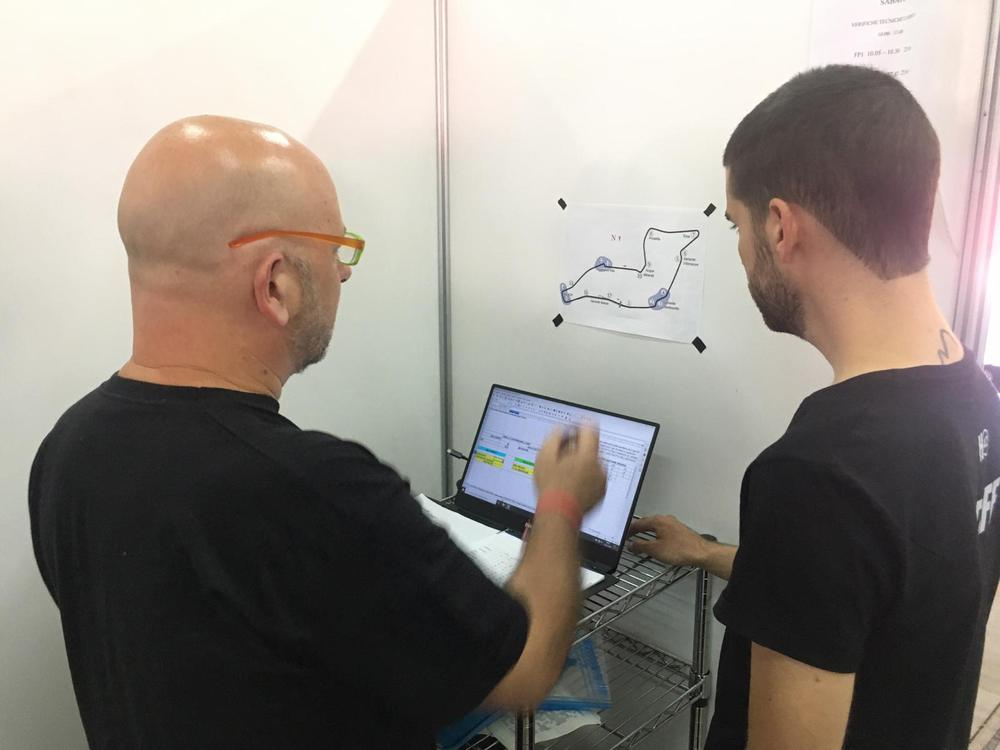

Gestione tecnica
Per chi ha un'auto da competizione (pista, salita o rally) e vuole lasciarla in mani preparate. Ogni pezzo ha la sua scheda con i chilometri percorsi: si interviene solo dove serve, con meno spese e più affidabilità.
- Manutenzione: pulizia, usura, geometrie, bulloneria
- Revisioni di cambio, freni, cuscinetti, ruote e motore
- Trasporto e assistenza sui campi di gara
- Restauro di auto storiche da corsa